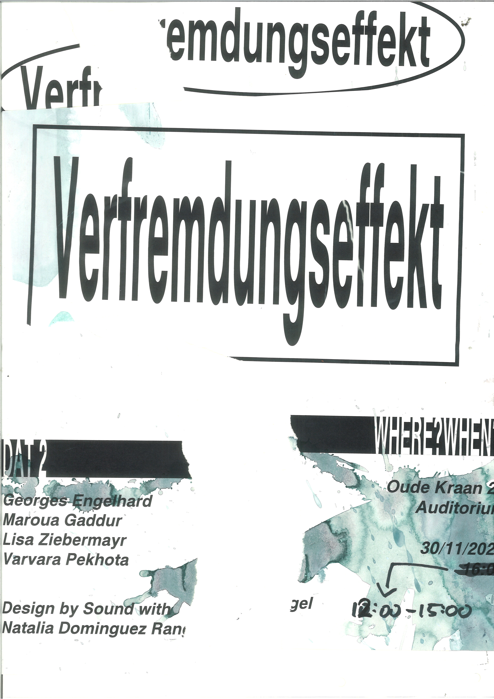

sound space visualization
A map is not only a recollection of reality.
It depicts a specific time and place.
Architectural sketches are fiction manifested in the inbetween,
not yet realized structure.
These cartographic architectural sketches depict the listening experience
of the ArtEZ Library Archive: ignored and unknown by most.
The annotations and markings from the sound recordings, done on the
10th of November 2023, were analyzed with a Spectogram and applied on the maps.
By using lowpass/highpass filters and recontextualizing them,
the archive becomes an imagined sound reality beyond its own accoustics.
exhibition
The work has been exhibited together with other works from DAT2, for which a exhibition theme was chosen and designed.
